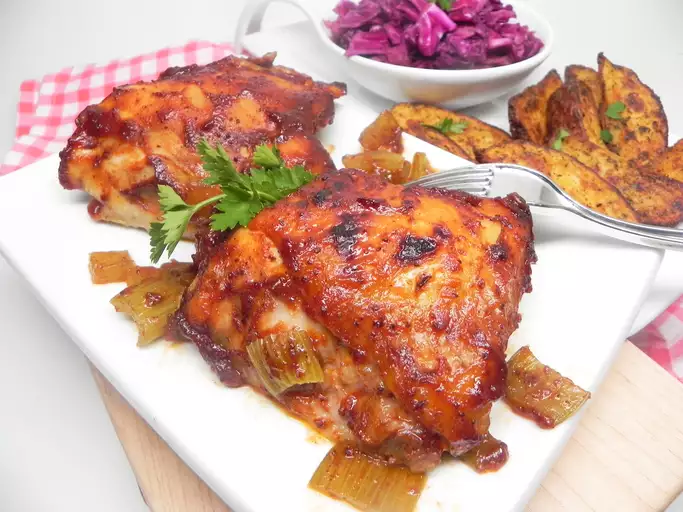

Instant Pot BBQ Chicken Thighs

Fast and delicous bbq chicken
Tender chicken cooked in a pressure cooker, for fast and easy convenience.
Perfect for last minute dinners, without a need for a grill.
Ingredients
- 1 Tbsp vegetable oil
- 2 lb chicken thighs
- 2 stalks celery, chopped
- 1 cup bbq sauce, divided
Steps
- Turn on your Instant Pot, select saute function. Heat oil until
hot. Add chicken thighs and cook until browned, about 3 minutes on each
side. Transfer chicken to a plate.
- Pour chicken broth into the pot. Cook and scrape up brown bits
with a wooden spoon to deglaze the pot, about 1 minute. Turn off the
Instant Pot. Add celery, 1/2 cup bbq sauce, and browned chicken thighs
to the pot. Stir to combine
- Close and lock the lid. Select high pressure according to
manufacturer's instructions; set timer for 8 minutes. Allow 10 to 15
minutes for pressure to build.
- Set an oven rack about 6 inches from the heat source and preheat
the oven's broiler to low.
- Release pressure carefully using the quick-release method according
to manufacturer's instructions, about 5 minutes. Unlock and remove the lid.
Transfer chicken to a baking sheet and baste with remaining 1/2 cup bbq
sauce.
- Broil for 5 minutes or until crisp.
Go Back